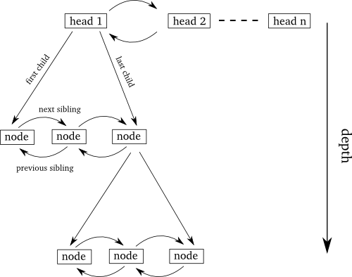

tree class is depicted
below (see the documentation for more detailed information).
Each node contains a pointer to the first and last child element,
and each child contains pointers to its previous and next sibling:

Data structure overview
The data structure of the
Iterators come in various types. The normal
iterator iterates depth-first
over all nodes. The beginning and end of the tree can be obtained by using the
begin() and end() members. The other type of iterator
only iterates over the nodes at one given depth (ie. over all siblings). One
typically uses these iterators to iterate over all children of a node, in which
case the [begin,end) range can be obtained by calling begin(iterator)
and end(iterator).Iterators can be converted from one type to the other; this includes the `end'
iterators (all intervals are as usual closed at the beginning and open
at the end).
Sample program
Here is a small sample program to illustrate
how
The output of this program is
Note that this example only has one element at the
top of the tree (in this case that is the node containing "one") but
it is possible to have an arbitary number of such elements (then the
tree is more like a "bush"). Observe the way in which the two types of
iterators work. The first block of output, obtained using the
sibling_iterator, only displays the children directly below "two". The
second block iterates over all children at any depth below "two". In
the second output block, the
tree.hh is used in practise.
#include <algorithm>
#include <string>
#include <iostream>
#include "tree.hh"
using namespace std;
int main(int, char **)
{
tree<string> tr;
tree<string>::iterator top, one, two, loc, banana;
top=tr.begin();
one=tr.insert(top, "one");
two=tr.append_child(one, "two");
tr.append_child(two, "apple");
banana=tr.append_child(two, "banana");
tr.append_child(banana,"cherry");
tr.append_child(two, "peach");
tr.append_child(one,"three");
loc=find(tr.begin(), tr.end(), "two");
if(loc!=tr.end()) {
tree<string>::sibling_iterator sib=tr.begin(loc);
while(sib!=tr.end(loc)) {
cout << (*sib) << endl;
++sib;
}
cout << endl;
tree<string>::iterator sib2=tr.begin(loc);
tree<string>::iterator end2=tr.end(loc);
while(sib2!=end2) {
for(int i=0; i<tr.depth(sib2)-2; ++i)
cout << " ";
cout << (*sib2) << endl;
++sib2;
}
}
}
apple banana peach apple banana cherry peach
depth member has been used
to determine the distance of a given node to the root of the
tree.
API documentation
Documentation is available in the form of
a pdf file. This file is also available
in the tarball as a LaTeX file. Further information can be
obtained by reading the test program (included in the
distribution). Also look at the simple
example below.
The most complete documentation of the interface is always
available in the doxygen
generated documentation.